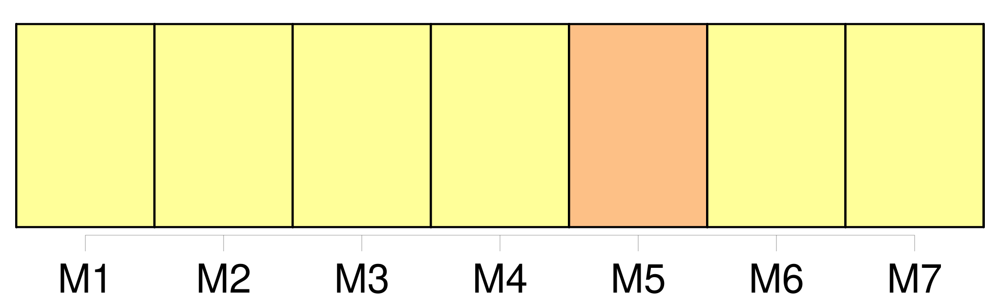
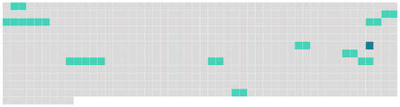

Longueur nb maillons : 10 mentions |
 |
De [la tutelle] [6 phrases]
Après la dissolution du mariage arrivée par la mort naturelle ou civile de l'un des époux, [la tutelle des enfans mineurs et non émancipés] appartient de plein droit au survivant des père et mère. [1 phrases]
Pourra néanmoins le père nommer à la mère survivante et tutrice un conseil spécial sans l'avis duquel elle ne pourra faire aucun acte relatif à [la tutelle] [9 phrases]
La mère n'est point tenue d'accepter [la tutelle] néanmoins, et en cas qu'elle [la] refuse elle devra en remplir les devoirs jusqu'à ce qu'elle ait fait nommer un tuteur. [1 phrases]
Si la mère tutrice veut se remarier, elle devra, avant l'acte de mariage, convoquer le conseil de famille qui décidera si [la tutelle] doit lui être conservée.
À défaut de cette convocation, elle perdra [la tutelle de plein droit] ; et son nouveau mari sera solidairement responsable de toutes les suites de [la tutelle] qu'elle aura indûment conservée.
396 [9 phrases]
Le tuteur élu par le père ou la mère, n'est pas tenu d'accepter [la tutelle] , s'il n'est d'ailleurs dans la classe des personnes qu'à défaut de cette élection spéciale le conseil de famille eût pu en charger. |
 |
Il est possible de télécharger la ressource sur la page Ortolang |
Si vous avez des questions ou vous voyez des erreurs, merci d'envoyer un mail à silvia.federzoni89@gmail.com |